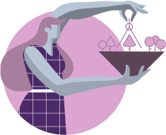

As both like taking care of their own self-image, they end up
reinforcing each other’s sense of superiority, often resulting in
elitism, disdain and snobbery toward others: specially those who have
less, or also people with a different taste or sense of refinement.
One of the main conflicts between Reformers and Individualists is in
the self-discipline vs. self-indulgence area, between personal and
emotional impulses. Ones may find Fours to be hopelessly emotional and
self-indulgent, while Fours may find Ones to be cold, rigid and
judgmental.
At the end of the day, Ones and Fours may
displease each other just for being what they are instead of an ideal
and unreal version of themselves. The relationship between them can
deteriorate into frustration and end as a result of bitter arguments
and wounds form the past.
Enneagram Type 6 In A Relationship With Type 5
How Does Each Enneagram Type Enhance the Relationship?
Enneagram type 1 (Reformers) and Enneagram type 5
(Investigators) are alike in many ways, especially in their
reluctance to express their emotions directly. Although Fives
are more mental and Ones like their ideas and philosophies to
have practical ramifications; both consider themselves empirical
people.
They both provide objectivity to the
relationship to avoid falling into sentimentalism. That’ how
they protect their mental clarity. Also, both of them share a
rich mentally stimulating life, full of curiosity and mutual
interests.
This is one of the many reasons Ones and
Fives enjoy each other’s company. In their relationship there’s
always room for intellectual stimulation, debating and
admiration for each other’s expertise and intelligence. This
couple is highly respectful of each other’s boundaries: they
don’t usually make the first move unless they have pretty strong
signals that they will be welcomed. This is how Ones and Fives
bring certain formality and courtesy to the relationship, which
can make the couple seem a little old-fashioned.
On
one hand, Enneagram type 1s bring logic and order, attention to
details, systematic thinking, and a desire to improve the world
around them.
On the other hand, Enneagram type 5s
bring curiosity, a profound taste for the bizarre and illogical
and fondness for disorder, chaos, and lack of apparent purpose.
If romance between Reformers and Investigators develops, it will
be slowly but deeply.

27
Enneagram 1 in Relationships